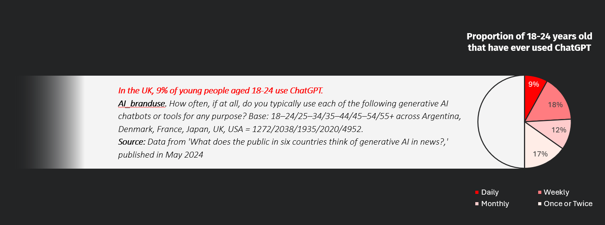

Visualize the Complexity of Everyday Decisions
This is the first part of my Final Major Project for the Master Degree in Design for Data Visualization, including research in decision making and communication. For the design practise part, please visit: A Year of A Heavy User with Generated AI
Introduction: Complexity in Daily Decision Making
Generative AI products are rapidly infiltrating people's work and daily lives, gradually limiting and even replacing human roles in decision-making. Concerns are that AI is minimizing our autonomous role, replacing our choices with its choices.

This includes myself: over the past year, the number of words I exchanged with ChatGPT was 177,784, which is a chilling figure for someone typically quite reticent. Thus, I conducted design research on generative AI-assisted decision making from the perspective of data humanism, attempting to arouse people's attention to their own decision-making behaviors through visualization of chatting history with ChatGPT. [Lupi G., 2017, Data Humanism]
This project drew on theories from data science, behavioral psychology, and game design to build the logical foundation for visualizing decision-making data and explored possible ways to communicate these ideas to audiences through card game workshop. In the design practice, I experimented with using information about the complexity features of decision-making to develop charts with visual metaphors in data visualization product.
The research is informed by the data humanism paradigm from George Lupi(2017) that emphasizing the three aspects to understand data: Knowledge, Behavior and People. In the research of this project, I referenced from the above theories in the attempt to support the interpretation of the dataset of my conversations with ChatGPT and the first-hand data collected from my audience.
THERE ARE SITUATIONS WHERE PEOPLE LIKE AND LOOK FOR COMPLEXITY:
“Play is older than culture, for culture, however inadequately defined, always presupposes human society, and animals have not waited for man to teach them their playing.”
Huizinga, J. (1955). Homo Ludens. p. 1.
According to Dinesh Vatvani (2018), the top 100 board games on the BoardGameGeek`s top 100 list, a very visible “beacon” for the hobby and many players will use this list to make decisions about which games to try or buy.
Above Charts: The complexity levels [voted by the BGG community] and popularity of different mechanisms (and some other game features) in board games. Data source: KAGGLE
Board games are full of visual metaphors and ontological metaphor that try to project the concrete game content onto the small symbols on cards and tokens. Finding the preference for complex mechanism of the board players provide much visual elements that might be applied in the visual communication of complexity in decision-making.
Research: Gamified Card Sorting Method
In this research, the first step is to concretize the abstract concepts in relevant with “decision-making”, like dice, fork road sign, and alcohol. These illustrations functioned in the communication with other designers to extract specific scenarios that one felt related to the most, like tasseography, and decided which scenario the design output should be set on.
Then the scenario was expanded with detailed narration of a classic experience and extracted data of specific behaviours that helped explained the dataset and variables. In the cart sorting research, these materials can be connected to decision-making theories to set a game stage.

This card sorting research is held during a work in progress exhibition to collected emotional responses of the audience encountering random complex occasions. The occasions are set on a fictional scene of planning a journey and were matched with the characteristics of complexity in decision-making that this research expected. [For details, see Appendix p45]
The responses contains information of multiple mediums: Respondents could record their emotions directly on the 2d emotion map. Or they could write their feelings and reactions with words and emojis, which were manually labeled with emotions by the researcher.
Analysis and Communication
Figure: Statistics of all responses based on the factor analyses of self-reported emotions and multidimensional scaling of words for emotion by Russel and Feldman Barrett[Barrett F. et al., 1998]: the size of squares represent the frequency of the emotion in the responses, and the lines represent the emotions that were recorded together, like “Stress but Excited”.
The figure on the right shows the information compiled from this research that concluded valid emotional responses from 10 respondents. According to the conclusion of Lerner J. S. et al. (2015), “Emotions constitute potent, pervasive, predictable, sometimes harmful and sometimes beneficial drivers of decision making... are neither random nor epiphenomenal.”
The aim of this chart is to emphasize the importance of emotions in decision makings to the people who are using generated ai, like ChatGPT, has already been able to “reflect and abstract emotional states in deep and multidimensional integrative ways.”[Elyoseph Z. et al., 2023]
Discussion: AI and Decision Making
Information technology continues to provide opportunities to alter the decision-making behavior of individuals.(Power, D. J., 2011) When people have gigabytes of data accessed at their fingertips, many researches and studies negatively shows that it’s harder for people to make rational decisions. (Okan B. 2021) Facing this challenge, human needs to enhance their ability to deal with the mass amount of information. And a tool address human needs by amplifying human abilities.(Victor, 2011)
Despite the ubiquity of visualizations in research and practice, there is no comprehensive understanding of the potential and limits of information visualization for decision-making, where its ability to improve decision accuracy and quality has been overwhelmingly confirmed. (Eberhard, K, 2023) Therefore, I apply design for data visualization as a tool to help people to do better decision-making.
"How would generated AI satisfied the user's need of suggestions on their decisions?" To connect the research result with the user experience of generated AI, this project adopted Fogg behavior model (Fogg B.J. 2019) with emotion mapping in 2 Dimensions (Saini T.S. et al. 2017) that signified factor analyses of self-reported emotions and multidimensional scaling of words for emotion. And the significant effects of emotions in decision-making behaviors can be interpreted furtherly according to The emotion-imbued choice model proposed by Jennifer S. Lerner,1. etc. (2014) provides a holistic perspective to understand the data I collected from myself and from my interviewees.
Notice
For full content, please contact me via e-mail.